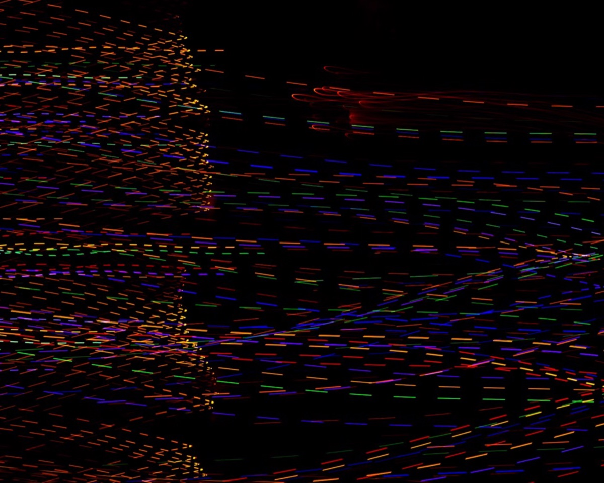
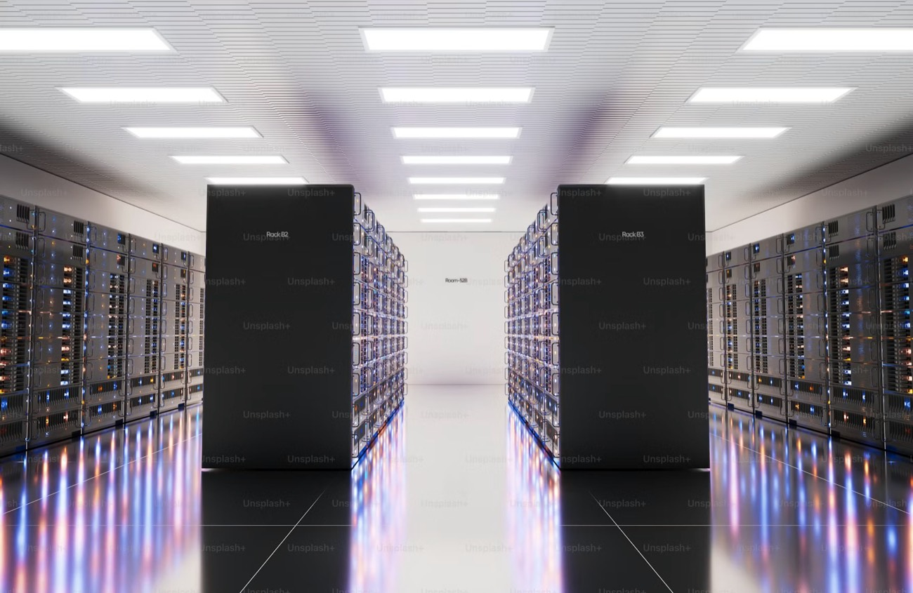
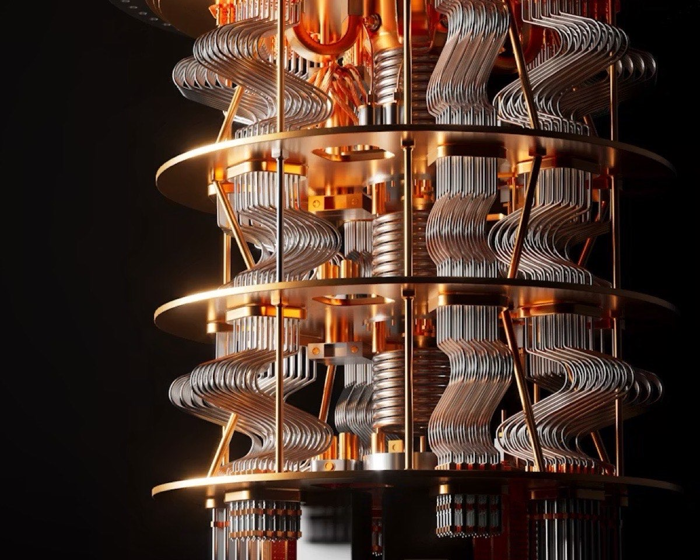
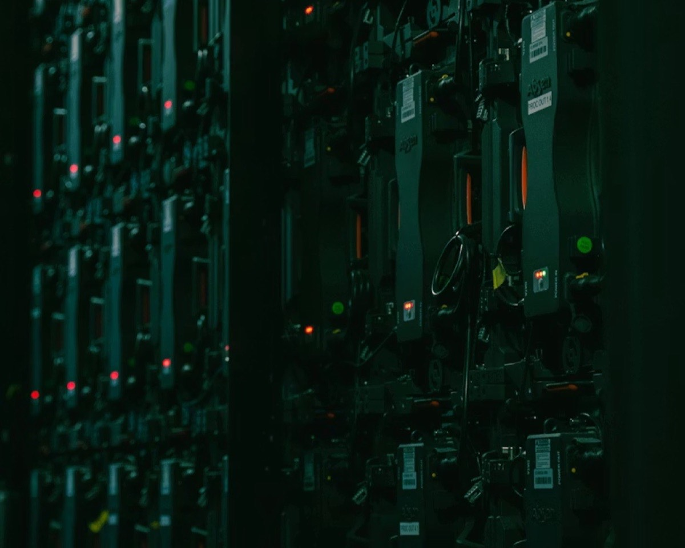

CausQ / What we do
Capabilities that
compound.
Four connected practices. We bring them together so your AI, your network and your security reinforce each other instead of pulling apart.
CausQ / What we do
Four connected practices. We bring them together so your AI, your network and your security reinforce each other instead of pulling apart.

We help enterprises move from experimentation to AI that runs the business, and increasingly, runs the network.

The network is no longer plumbing, it’s the platform AI runs on. We rebuild it as automated, observable, software-defined fabric.

We secure the enterprise for the threats of today and prepare it for the cryptographic break of tomorrow, without stopping the business.

We keep it all running. Resilient cloud and edge platforms, operated with follow-the-sun support across the US and EMEA.
Before the build comes the survey, the assessment and the design. Our consulting practice covers strategy and architecture advisory, network and wireless site surveys, code and firmware upgrades, and data-center, cloud and security migrations. Explore Consulting & Advisory →
A short briefing with our engineers will tell you more than a six-week assessment from anyone else.
Book a briefing →